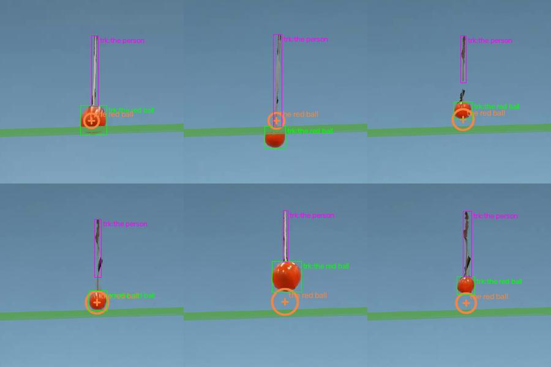
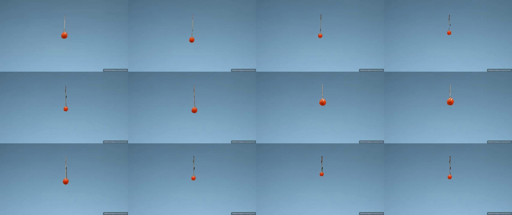
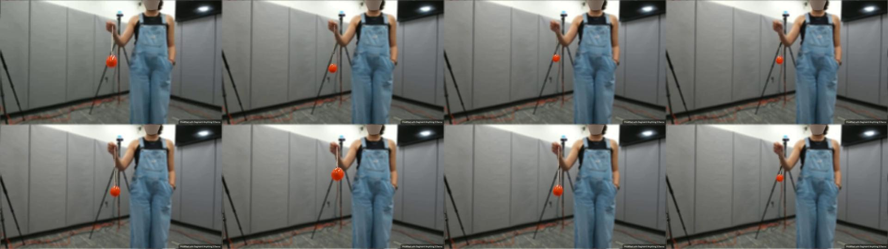
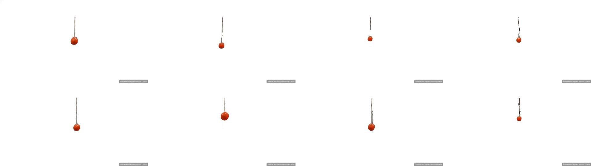
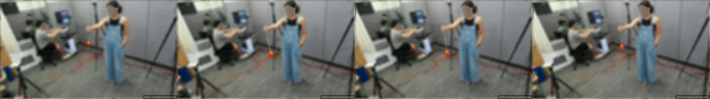

← 视频与问题 · 评估员逐视频报告（由 outputs/eval/*.md 生成）
主因层：拟合/运动模型（3D 没有摆模型，挂着的球被当成 held 用一条匀加速曲线拟合 2 s 的往复摆动）＋ 路由（物体不在场时 S3 仍固定用几何值）；0.2 s 速度和加速度的真值中度存疑 根因：（1）scene_fit 把 attached_to hanging point 当 held 处理：不受重力、没有支撑，整段 2 s 只拟合一组 p0/v0/a 二次曲线（rms 15.6 px，rms_rel 0.42，conf 0.05），所以 0.2 s 的加速度只有 1.66 m/s²。几何流水线逐帧差分给出 4.53 m/s²，还被平滑压低。用摆模型（悬挂点 + 绳长 + θ(t)）重拟以后，L≈0.34 m，θmax≈46°，v0.2≈1.40，v0.6≈0.85，a0.2≈5.9，而且这几个数基本不随焦距变。（2）person 在 s 变体里被抠掉了。"person" 的跟踪框其实是绳子，presence v3 判 absent，置信度 0.98，v8e 拟合也标了 object-absent，但 S3 路由仍然取几何值 26.4（绳子宽度换算出来的），没有用 Qwen 的 45。（3）v0.2=2.02 m/s 要求球比最低点升高 0.21 m，但画面上不依赖焦距的上升量只有 0.10–0.12 m，摆的物理上限约 1.4–1.5 m/s，所以真值偏大约 1.45 倍。
captured_0027s 评估（val，S3，4 题）
画面：s 变体，人和手都被抠掉，背景是蓝色，只剩一根绳子和吊在下面的红球。原始视频是测试集的 captured_0027：人右手提着绳子，球朝相机、离相机方向前后摆。所以球的视直径在 29–50 px 之间变化，比值 1.71；横向只移动约 20 px。
题目表（mh3 / defaults 两份 routed 一致）
| 题 | 答案 | 几何 | 场景拟合（conf） | Qwen | 最终（来源） | MRA | 摆模型原型（本报告） | 主因层 |
|---|---|---|---|---|---|---|---|---|
| 红球 0.2 s 速度 cm/s | 201.73 | 126.4 | 141.8（0.05） | 135 | 126.4（geo） | 0.6 | 138–142 | 运动模型 + 真值存疑 |
| 红球 0.6 s 速度 cm/s | 66.68 | 86.3 | 75.3（0.05） | 100 | 86.3（geo） | 0.7 | 83–87 | 运动模型（差距在噪声内） |
| 红球 0.2 s 加速度 cm/s² | 1086.09 | 453.3 | 166.2（0.05） | 98.1（=g） | 453.3（geo） | 0.4 | 585–607 | 运动模型 + 真值存疑 |
| 人的肩宽 cm | 47.39 | 26.4（量的是绳子） | v8e: object-absent / v7: 49.7（典型尺寸） | 45 | 26.4（geo） | 0.5 | — | 路由（不在场仍用几何） |
链路逐层
- 解析：题目里的量、时刻、单位都解析对了。depth_info 有三处问题：
distance_book_camera在 t=0.2 s 和 0.6 s 各有一条，时刻和红球题完全一致，但画面里没有书，也没有其他会动的物体。这是标注写错了名字，指的就是红球。验证：在这两个时刻，Z·d/D 推出的 f 分别是 1.0995×36.2/0.07=569 和 1.151×31.4/0.07=516，彼此一致，也和摆模型最优的 f 500–550 一致。- 几何流水线没认出这对应红球，日志写着 "no depth for prior object, used median 1.19 m"；scene_fit 里 n_anchors=0，f 来自 lab_prior 650。
person_left/person_right是人的左右肩两个点，题目问的正是肩宽。几何流水线把它们当成两个"物体"，做了 size-based depth。- 物体清单 / 在场性：清单有 2 个物体（red ball、person），没有把 rope/string 列成结构。presence v3 判 person 为 absent，置信度 0.98，判断正确。
- 跟踪：红球的 SAM 框和红色像素掩码逐帧对得上，框宽差 ≤2–3 px。"the person" 一共 49 帧，框全在绳子上，例如 f0 的框是 [426,98,437,213]，正好是绳子。叠加图见下面的 overlay_grid，品红框就是 "person"。
- 场景图：
- v3grid 给的是
red ball attached_to hanging point（0.95），以及person on floor（0.3），后者对 s 变体不成立。 - pfc2 的 attached_to 丢掉了 target（to=null），还多出一条假接触：
ball–person contact 1.40–1.71 s，"boxes adjacent" 实际是绳子框挨着球框。另外 0.417 s 那一帧被误判成 airborne。 - events.turns_t 是 0.167/0.5/0.79/1.13/1.42/1.71，间隔约 0.31 s。这些是画面 y 的拐点。球前后摆时，y 每个摆动周期上下两次，频率是 2ω。真正的摆动周期要看视直径或 Z 的振荡：远端极值在 f11.5 和 f41，T≈1.23 s。如果直接拿 y 拐点算周期，L 会小 4 倍。
- 拟合（c_support_v8e，c_v8e_now 和 c_support_v7 的球结果完全相同）：
- support.mode=held，plan_mode=held。整段只用一组 p0/v0/a 匀加速：p0=(−0.002,−0.007,1.82)，v0z=−1.61，az=+1.66。
- 叠加图里 0.2 s 的投影比实际高约 28 px，1.08 s 低约 45 px。
- f=650 来自 lab_prior，plane_ok=false：画面里根本没有地面，绿色网格是假设出来的。
- 置信度把这条拟合正确地压到了 0.05。问题不在打分，而在没有能描述这种运动的模型。
- 路由：
- 三道球题走 S3，用的是几何值。几何值对 0.2 s 速度和加速度偏低，但在已有来源里仍是最好的。Qwen 的加速度答 98.1，就是 g，说明它把"挂着的球"默认成重力加速度。
- 肩宽题：v8e 已经标了 object-absent，presence 也判 absent，路由仍然取几何值 26.4。几何值是绳子的宽度乘尺度得到的。如果取 Qwen 的 45，MRA 是 0.9。
- 真值：见下面"真值存疑"。
摆的物理反推（不依赖答案的部分）
- 不依赖焦距的竖直上升量：球心的竖直坐标 Y=(v−cy)·D/d，f 被约掉了，只依赖 D=7 cm 和 cy。最低点 f4 是 +0.053 m，三个极值点分别是 f12 −0.047、f26 −0.068、f40 −0.080。每半摆上升 0.10–0.12 m（还叠加了约 2 cm/s 的手部上移）。按能量守恒，最低点速度 v_max=√(2g·0.10..0.12)=1.40–1.53 m/s。
- 周期：远端视直径极小值在 f11.5 和 f41，T≈1.23 s。小角近似 L=gT²/4π²=0.375 m；按 θ0≈46° 做大振幅修正（×1/1.04²）后 L≈0.34 m。
- 摆模型原型（scratchpad 里的 pendfit2.py / pendfit3.py）：
- 参数：非线性摆 ODE（带阻尼）＋ 悬挂点 3D 位置（允许竖直漂移）＋ 摆动平面方位 φ ＋ 相机俯仰 ＋ f。
- 观测：球心 u、v 和面积等效直径 d。
- f 固定在 450/500/550/600/650 时，代价分别是 116/104/104/110/120。d 的 rms 0.9–1.5 px，v 的 rms 2.5 px，u 的 rms 5.4 px（有少量锥摆分量没建模）。
- 结果：L=0.337–0.341，θmax=46–47°，v0.2=1.38–1.42，v0.6=0.83–0.87，a0.2=5.85–6.11，基本不随 f 变：尺度由 g 和周期决定。
- f=750 拟合不进去：d 的 rms 10.9 px。
- 把 depth_info "book" 当锚点算（f=550 时 Z0.2 拟合值 1.06、Z0.6 拟合值 1.21，给定 1.0995/1.151），也和这个解一致。
- 真值是否自洽：
- 0.2 s 的真值本身满足摆的关系：a=v²/L 给出 L=2.017²/10.86=0.375 m，和周期一致，说明 0.2 s 时球确实在最低点附近。
- 但 v=2.02 m/s 需要上升 0.21 m（θ0≈63°），是画面实测上升量的两倍。
- 用摆模型的值也只能拿到 0.6 / 0.7 / 0.5（加速度从 0.4 提到 0.5）。这个视频上摆模型的收益只有 +0.025/题，不能拿这个视频来验收摆模型。
真值存疑（中）
- v0.2=201.73、a0.2=1086.09：两个值互相自洽（a=v²/L），但振幅约是画面的 1.45 倍。证据：画面上不依赖焦距的上升量是 0.10–0.12 m，三种估计都落在 1.3–1.5 m/s：能量守恒、摆拟合、depth_info 锚点下 Z 的变化率（f≈540 时 dZ/dt≈1.46）。不建议改逻辑去迎合。
- 肩宽 47.39：这个视频里人被抠掉了，没法核对，不判存疑。
逐条问题（按影响面排序）
1. 3D 没有摆模型：挂着、摆动的物体被当成 held 用匀加速拟合（qp-code-3d）
- 现象：0027s 的拟合 rms 15.6 px，a0.2=1.66 m/s²（真值 10.86，摆模型 5.9）。叠加图
captured_0027s/overlay_grid.jpg
，以及 overlay_t0.20.jpg / overlay_t1.08.jpg。 - 根因层：拟合 / 运动模型。in_progress 里登记的是"rope 竖直 + attached_to 距离恒定约束"，只写了约束，没有动力学；本条是把它具体化、扩大。
- 同一缺陷影响的视频：测试集 captured_0010 / 0010s / 0010X，3 个变体共 18 题：绳长、球直径、0.3/0.6 s 速度和加速度，prior 只有 g=9.8。这一组只能靠摆的周期定尺度：L=gT²/4π²。captured_0010 是手提的单摆，左右摆。另有测试集 captured_0027 / 0027s / 0027x 的 9 道球题。验证集只有 0027s。
- 通用修改建议（scene_fit 新增 motion=pendulum）：
- 触发条件：场景图对该物体给出 attached_to / hanging，且覆盖 ≥80% 帧；同时 u、视直径 d、v 三者中至少一个在可见区间内有 ≥1 个完整周期的振荡（自相关主峰）。周期以 d 或 u 为准；v 在前后摆时是 2ω，要识别出来，不能直接用。
- 参数：悬挂点 P（3D，允许线性漂移）、L、摆动平面方位 φ（可选锥摆的第二个角）、θ0、ω0、阻尼 c；f 走现有的 focal votes（band）；可选相机俯仰。θ(t) 用非线性摆 ODE 积分，g 用 prior 或 9.81。
- 观测：球心 u、v，球的视直径 d（球形 prior D 给出深度），有 depth_info 时作为锚点。悬挂点初值取挂绳 / 绳子掩码的上端，或者物体框正上方细长结构的顶端。
- 作答：速度 L|ω|；加速度 √((Lω²)²+(g sinθ+cLω)²)，即向心加速度加切向加速度；"length of the string" = L − D/2（悬挂点到球顶）。只有 g prior 时，用 L_px·Z/f 和周期给出的 L_m 定尺度，再求直径和其他量。
- quality：周期给出的 L 和几何给出的 L 是否一致，f 在 ±20% 内扫描时速度的离散程度，以及残差。
- 验收（不用答案）：
- 0027s：v 和 d 的 rms <3 px；L 在 0.33–0.36；f 在 450–650 扫描时 v0.2 的离散 <5%；a0.2 >4 m/s²。
- 测试集 0010 三个变体之间的绳长差 <5%，用测试分辨率换算，不看答案。
- 负责人：qp-code-3d。

2. 物体在场性为 absent 时，S3 路由仍然取几何值（qp-tools，route）
- 现象：肩宽题，几何 26.4（跟踪框是绳子）→ MRA 0.5；Qwen 45 → 0.9。v8e 已经标了
method=object-absent，presence v3 判 absent，置信度 0.98。 - 根因层：路由。这是 S3 固定用几何值造成的。跟踪层面"absent 物体不出框"已在 in_progress 里（在场性 v3 / tracks_m 默认待切换），路由这条是新的。
- 同一缺陷影响的视频：验证集 0027s 肩宽；simulation_0015 鸟（几何 1.40 是跟错静止雕塑后碰巧得到的 0.9，改了之后用拟合值 1.21，仍是 0.9）。测试集掩码变体里问人的 14 题，例如 captured_0015s/x 的身高和肩宽、0018s/x 的身高和鞋长、0041s/x 和 0047s/x 球到人的距离，要逐个看 presence；人如果是被抠掉的那个，同样会命中这条。
- 通用修改建议：在 route 里，题目物体 presence=absent 且 conf ≥0.9，或者拟合 method=object-absent 时，几何值和场景值都不能作为最终答案，也不能作为提示，按 Qwen → typical-size 表（手写常识表）的顺序回退。距离题里只要一方 absent，同样处理。
- 验收：0027s 肩宽取 Qwen 值；0015 鸟取拟合值或 Qwen 值；其余题的来源不变。
- 负责人：qp-tools。
3. depth_info 的名字和题目物体不匹配时，按时间戳绑定；X_left/X_right 当作 X 的两个端点（qp-tools，parse/data）
- 现象：
distance_book_camera在 t=0.2/0.6 s，和红球题的时刻完全相同，但没绑定到红球：几何用了"median 1.19 m"，拟合 n_anchors=0，f 用 lab 先验 650（锚点一致的 f 约 520–570）。person_left/right被当成两个物体，没有作为肩宽题两端的深度。 - 根因层：解析（parse_depth_info 的名字匹配）。in_progress 里 0015 那条只覆盖了正则过窄和拼写容错，时间戳绑定和 left/right 端点是新的。
- 同一缺陷影响的视频：book 只出现在 0027 一族（验证 1 个视频，测试 3 个变体）；
person_left/right只在 0027 一族。测试集 captured_0027 的人是可见的，那里的肩宽可以用两个端点各自反投影后求欧氏距离（ΔZ=4.45 cm），和 in_progress 里"solve 3D 两点距离"那条接上。 - 通用修改建议：
- 带时刻的 depth 条目如果名字匹配不上清单里的任何物体，而它的时刻集合和某个唯一被问到的动态物体的题目时刻相同，就绑定到这个物体，conf 0.6，并检查两个时刻推出的 f=Z·d/D 是否一致（差 <20% 才保留）。
<obj>_left/_right/_top/_bottom解析成 obj 的部件端点，挂到问那个物体两端尺寸的题上。- 注意：在 0027s 上，把锚点 f 改成约 540 后，几何 / 拟合的 v0.2 会再降约 17%（真值偏大），所以这条不能用 0027s 的分数验收。
- 验收：0027s 的 notes 里出现 "depth anchor (time-bound) the red ball"，两个时刻的 f 差 <20%。
- 负责人：qp-tools（解析）；锚点的使用归 qp-code-3d。
4. 场景图对吊摆的描述不完整：attached_to 丢 target、绳子框造成假接触、y 拐点被当成运动事件（qp-tools，scenegraph）
- 现象：
- pfc2 中
red ball attached_to → null（v3grid 里是 hanging point）。 ball–person contact 1.40–1.71 s：person 框其实是绳子，属于纯画面相邻。- 0.417 s 那一帧误判为 airborne（前后都是 hanging）。
- turns_t 用的是 y 拐点，频率是摆动的 2 倍。
- 根因层：场景图。contact 排除纯画面重叠的问题已在 in_progress（0061 篮球–瑜伽球），这里只标注；另外三条是新的。
- 同一缺陷影响的视频：0027 一族、0010 一族（12 + 18 题，主要在测试集）。
- 通用修改建议：
- attached_to 保留悬挂点节点。悬挂点 = 物体上方细长结构的顶端；绳子作为 part_of=物体的 structure，进清单但不当作物体。
- 单帧和前后标签相反的 airborne 做平滑（≥3 帧多数投票）。
- 对 attached_to 的物体，events 增加
period_t：用 d 或 u 的自相关算周期，同时给出 y 拐点和摆动周期的关系，供摆模型使用。 - 验收：0027s 有 hanging point 节点和 period≈1.2 s；没有 ball–person contact；不出现孤立的单帧 airborne。
- 负责人：qp-tools。
截图 / 脚本
- 9 帧拼图（s 变体）：
captured_0027s/contact.jpg
- 原始视频里的人提着绳子（测试集 captured_0027）：
captured_0027s/test_captured_0027.jpg
，肩部放大.../eval_0027s/test_0027_shoulders.jpg - x 变体：
captured_0027s/test_captured_0027x.jpg
- 拟合叠加 + 跟踪框（0/0.2/0.46/0.6/1.08/1.7 s）：
captured_0027s/overlay_grid.jpg
，单帧.../eval_0027s/overlay_t*.jpg - 测试集 captured_0010（左右摆的单摆）：
captured_0027s/test_captured_0010.jpg
- 摆模型原型脚本：
/tmp/claude-1017/-data-yumenghe-QuantiPhy/823507c7-069c-4584-aec0-69d0a1b126a7/scratchpad/eval_0027s/pendfit2.py、pendfit3.py